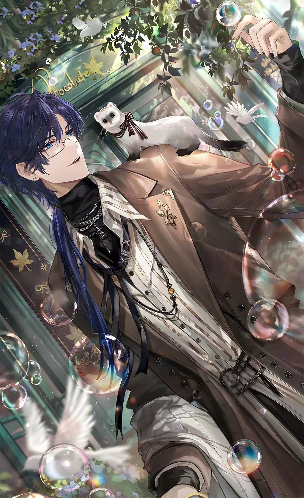

01
司岚 Clarence
会长大人
圣塞西尔学院 · 学生会长
圣塞西尔学院的学生会长，也是学院里堪称恐怖的存在。法律系直博生、学院助教，同时参与海外高校联合培养项目。 自幼天资过人，是旁人眼中德智体美全面发展的天才少年；因家人常年不在家，早早养成独立自律、凡事制定计划的性格。 童年在昏暗防空洞里钻研设计、制作模型，落下高度近视；求学期间深耕法律领域，以极致理性对待学业与工作， 成为学生会长后，做事一丝不苟、公平严苛。
法律系直博学院助教高度近视计划至上